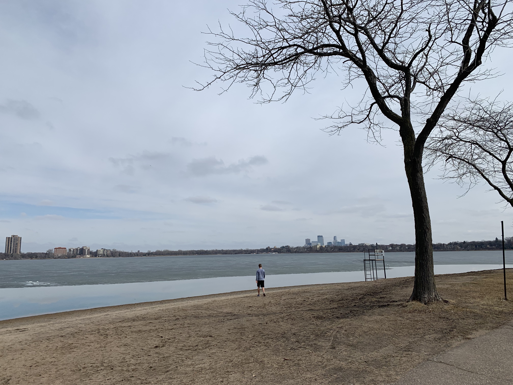

I was born and raised in Minneapolis, MN. I moved to Madison, WI for college, but I am always so happy when I go back home. I love Minneapolis because there are lakes everywhere, but the bustling downtown is just minutes away. My favorite thing to do when I'm home is to go on lake drives. The photo below captures the beautiful view from a Minneapolis lake drive
